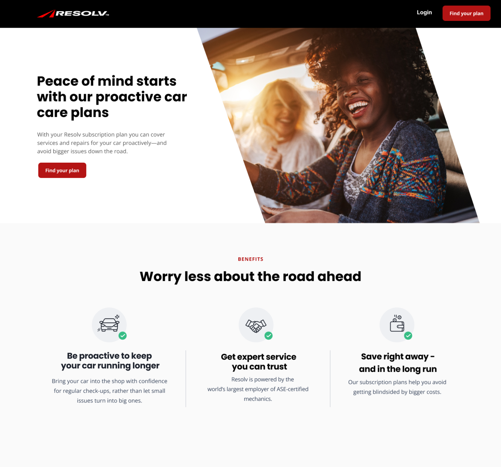
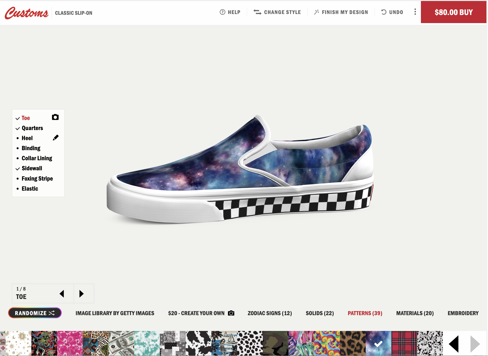
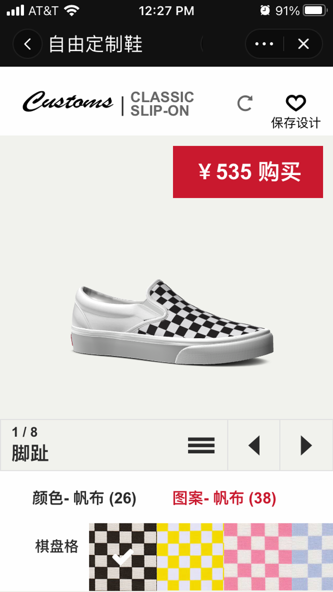
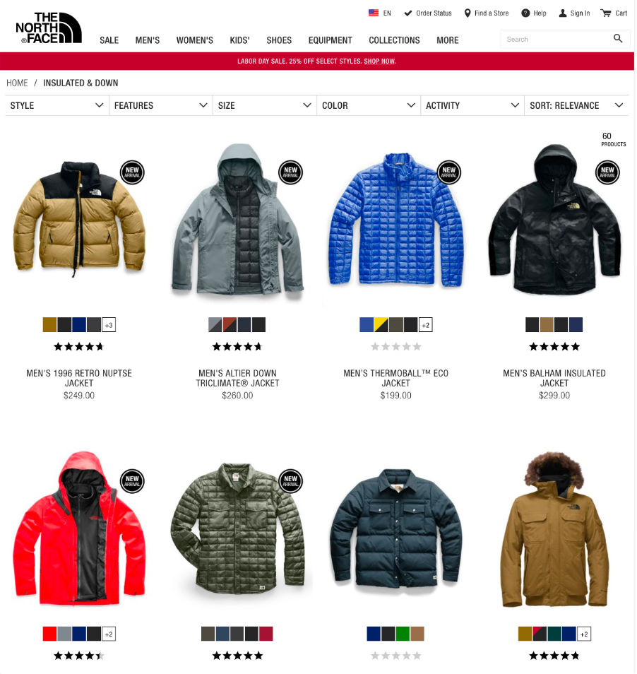
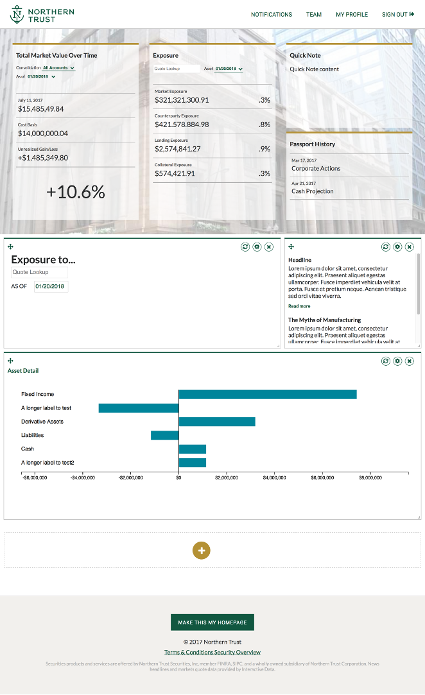
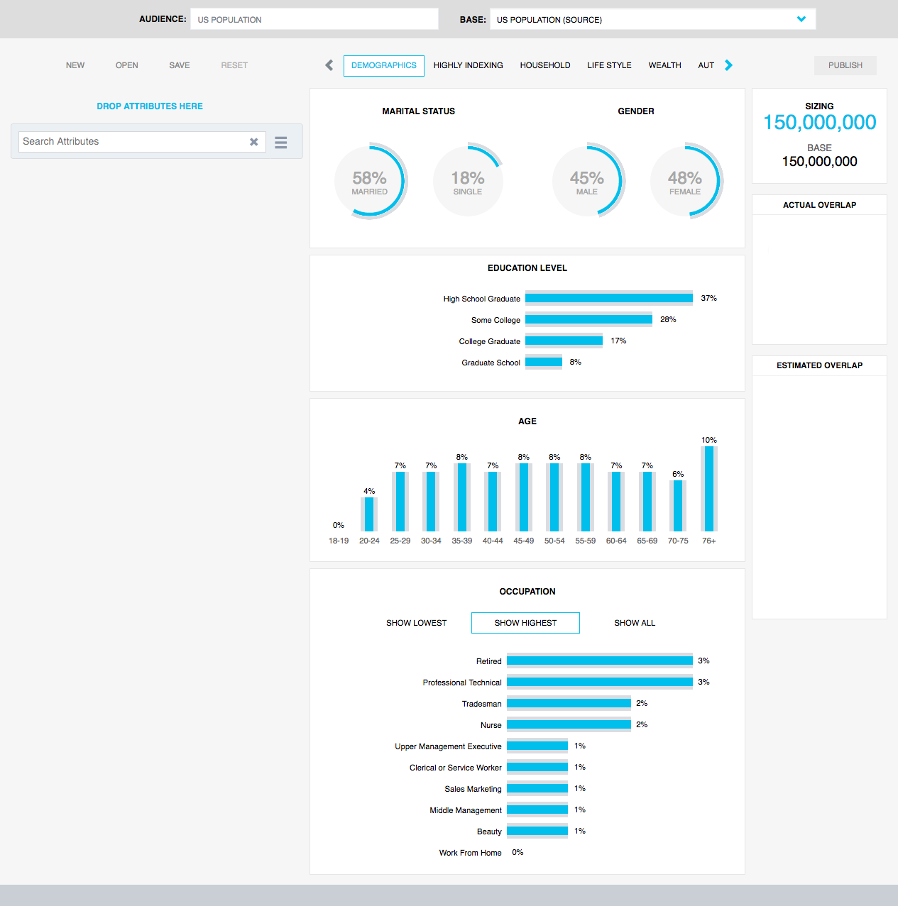
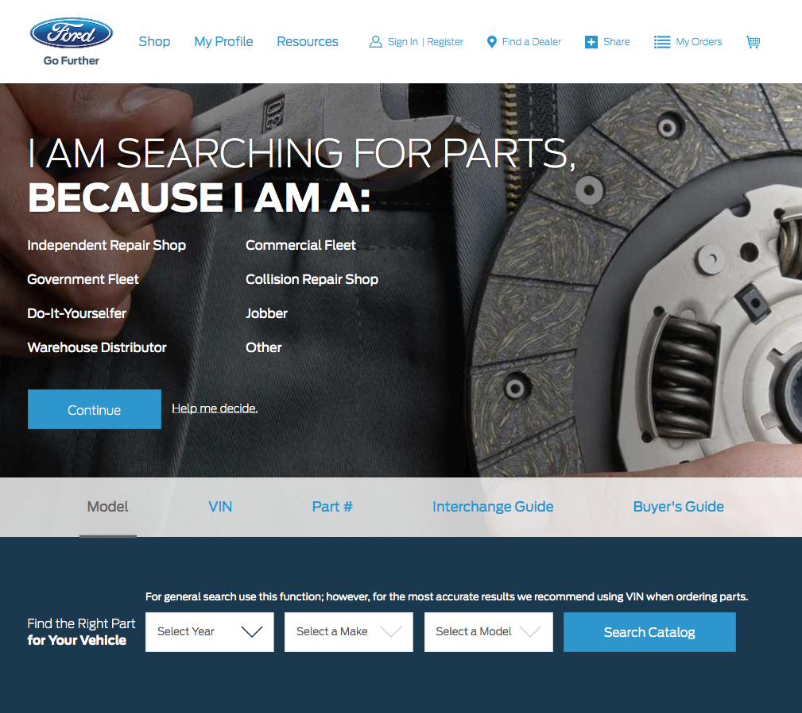
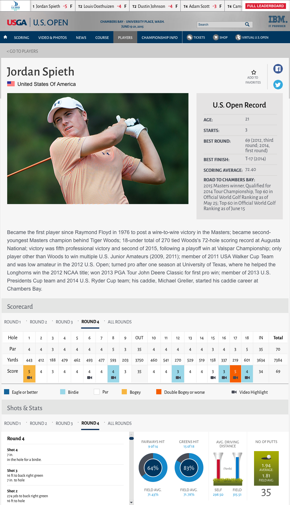

More than eight years of experience working within agile methodologies and leading on-shore, near-shore, and off-shore teams.
Experienced with standard agile tools such as Git, Jira, and Confluence.
Leading and participating in agile ceremonies such as story refinement, pointing, pull request reviews, daily scrum standups, and retrospectives.
Analytics
Built data analytics for startups looking to impress, as well as enterprise clients looking to upgrade their capabilities.
More than ten years of experience with google analytics implementations such as GTM.
Utilize industry-standard technologies like rechart.js and d3.js visualization libraries to craft custom-made dynamic charts and allow clients to interact with their data in new ways.
E-commerce
Over fifteen years of experience leading front-end teams in building enterprise level front-ends in Angular, React, and Vue.
Portfolio
Enterprise E-commerce (2024)
Led a team of five developers on a new e-commerce project for a major grocery store chain in the Midwest.
The front-end stack consisted of Next, React, GraphQL, and the styled-components library for visual layout.
Interviewed, hired, and managed the team while interacting with stakeholders, project managers, quality assurance, and analytics team leaders to drive the scope of work.
Recommended architectural solutions and mentored team members at a story level in a highly agile environment.
Contributed to coding stories to create re-usable react components within the client's microservice ecosystem.
React and AEM Re-platforming (2023)

Led an off-shore front-end team in a re-platforming project in AEM and React for a leading tire manufacturer.
Responsible for architecture as well as working closely with UX and offshore development teams to deliver accessible and responsive designs.
Coded stories in React to create major sections of the new site.
3D E-commerce (2022)

Led a near-shore team, a content management resource, and a QA resource to develop and enhance the client’s 3D e-commerce web application.
Created the high-level architecture, front-end architecture, and proof of concepts in Vue.js for specific technical solutions.
Trained new developers, worked with stakeholders on requirements, and lead sprint planning in an agile environment.
Technology stack was in Vuex for state management, Vue.js and Three.js, a browser-native 3D libary.
Tmall Hybrid Phone App (2020)

Responsible the web portion of the front-end development of a new mobile hybrid application for major footware company, using Vue.js, Sass, and Foundation 6.
Worked closely with off-shore resources in China to integrate into the native portion of the application.
Enterprise E-commerce (2018)

Updated the visual design of The North Face e-commerce site for the 2018 holiday season using technologies such as IBM WebSphere Commerce, Foundation 6, and Sass CSS Preprocessing
Led a team of two other developers.
Enterprise Banking (2018)

Created a prototype for a next generation platform based on Node, Yarn, React.js, Redux, and Redux sagas.
Evaluated various node packages such as reactstrap for bootstrap support, react-intl for i18n support, and react-grid-layout for user configurable grid layouts.
Project was handed off to a newly-formed team to implement.
Analytics and Visualizations (2016)

I led the front-end team in launching a new data analysis and visualization single page application using technologies such as Angular.js, Twitter Bootstrap, JQuery, D3.js, and Sass CSS Preprocessing to interact with an AWS cloud-based dataset using REST services.
Enterprise E-commerce (2016)

I served as the front-end architect for Ford’s international parts e-commerce site. Front-end technology included HTML5, Bootstrap, Sass CSS Preprocessing, and AngularJS. Site was designed to support multiple languages and countries, as well as having a responsive layout for mobile through large desktop clients.
Large Sporting Events (2015)

Responsible for several high-profile new features for the 2015 U.S. Open Golf tournament site.
Used Ajax and JSON to create a real-time score ticker than ran across the top of most of the pages.
Real-time shot-by-shot updates on the leaderboard and the player bio pages.
Enterprise E-commerce (2012)
Led a team of three other developers to create the layout for the MileagePlus booking engine.
Multi-language, multi-region e-commerce engine that incorporated side-by-side search by schedule and the ability to use a combination of miles and money.
Core technologies were HTML5, CSS3, and JQuery, and Ajax
About
I am a front-end web leader with great experience in agile development, e-commerce, and large scale enterprise application development and maintenance.
I have hired, led, and managed front-end teams to success! Strong skills in Web Development, Architecture, Management, Web Applications, Analytics, and Accessibility.